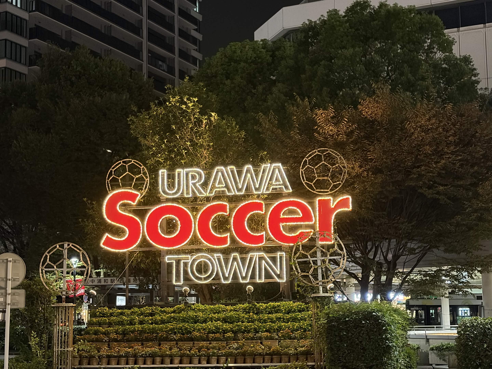
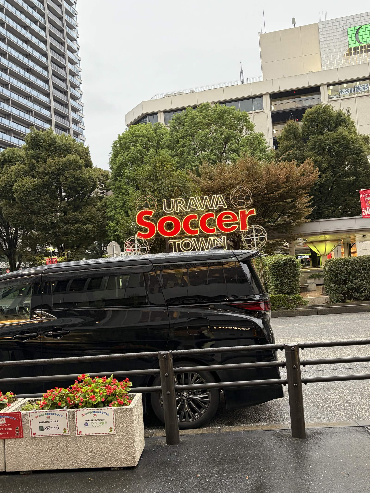
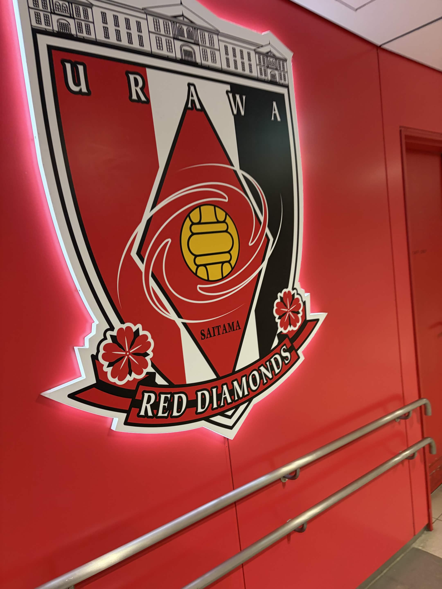
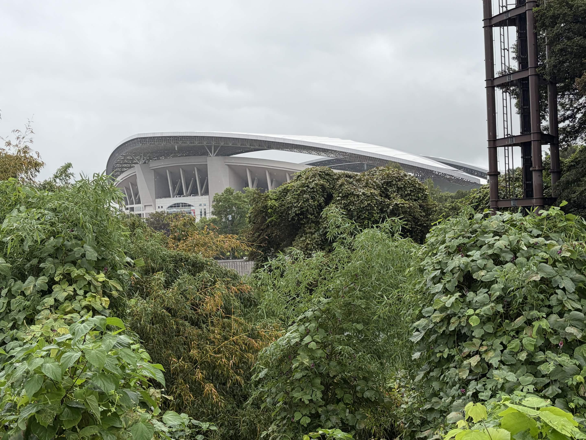

浦和レッドダイヤモンズと共に半世紀近くを歩んできた浦和。試合日には街全体がレッズカラーに染まります。

1950年創部の三菱重工業サッカー部を前身とする浦和レッドダイヤモンズ(浦和レッズ)。 Jリーグ創設とともにプロクラブとして生まれ変わり、以来、浦和はクラブと共に歩む 「サッカーの街」として全国にその名を知られてきました。ホームゲームの日には 駅前から商店街まで赤いユニフォームで埋め尽くされ、街全体がひとつになる熱気に包まれます。
約6万3千人を収容する日本屈指のサッカー専用スタジアム。2002年FIFAワールドカップの会場にもなった、浦和レッズの主要ホームスタジアムです。
クラブ創設以来親しまれてきた歴史あるスタジアム。コンパクトな造りならではの近い距離感で、選手とサポーターの一体感を味わえます。
試合日には多くの店がレッズカラーの装飾でサポーターを歓迎。応援グッズを扱う店や、勝利を願う横断幕を見かけることもしばしばです。
クラブが運営する複合スポーツ施設。ユースの試合や地域向けイベントも開催され、次世代のサッカー文化を育む拠点になっています。

浦和レッズのサポーターは、その声量と一体感の高さでJリーグ随一とも言われます。 試合開始前からスタンドを埋め尽くす大合唱、勝利を分かち合う喜びの輪 — その熱量は選手たちの背中を押す大きな力となってきました。 応援は単なる観戦ではなく、街の文化そのものとして根付いています。

2002年FIFAワールドカップの会場にもなった埼玉スタジアム2〇〇2。試合日にはスタンド全体が赤に染まり、浦和レッズの本拠地としての一体感を肌で感じることができます。
スタジアムだけでなく、駅周辺の商店街やグルメもあわせてどうぞ。